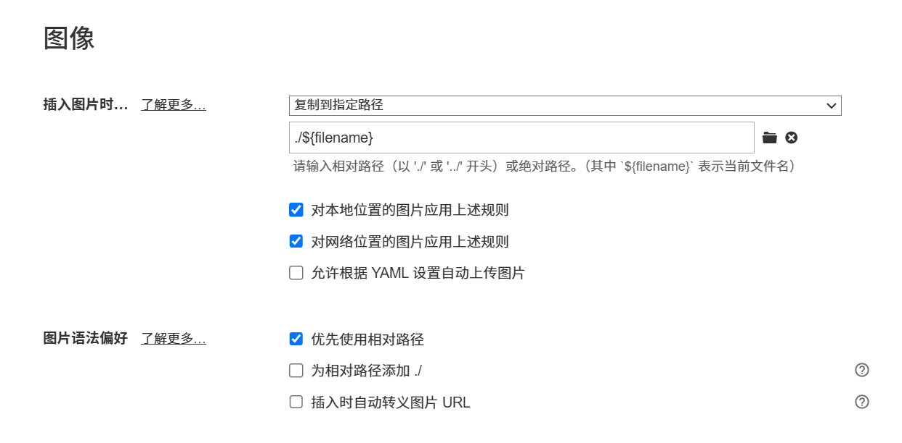
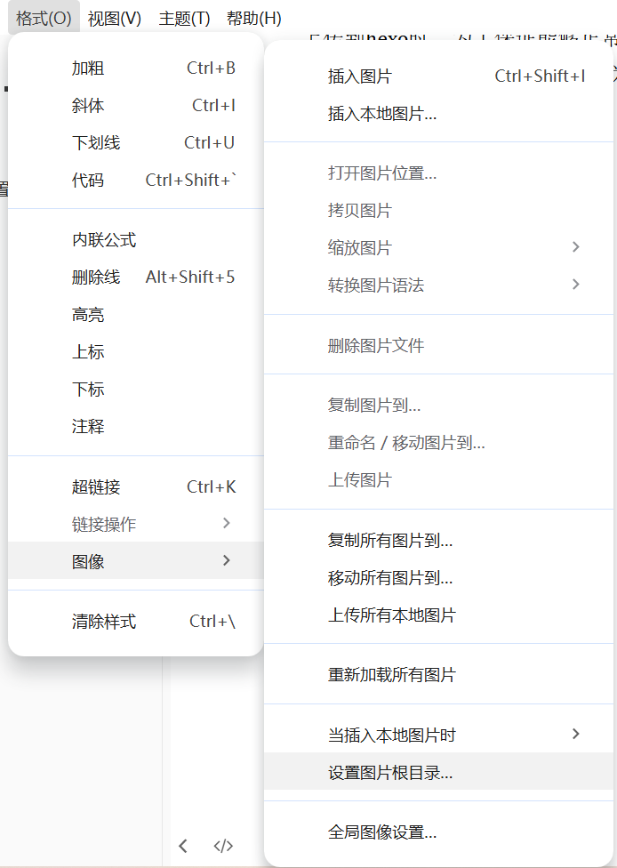

第一篇blog就记录一下搭建博客的过程
1.环境准备
具体内容可以查看链接。
主要包括：安装git、nodejs、hexo/hexo依赖。
配置github的ssh key。
搭建博客之后链接到仓库。
2.额外的主题使用
使用了开源主题。
- 此时配置文件有：
根目录下"_config.yml"
根目录下"_config.reimu.yml"
主题本身的配置文件themes\reimu\_config.yml"
对于主题之内的改动，不去修改主题自身的yml文件，而是修改外层的"_config.reimu.yml"文件。
3.数学公式相关配置
- 这里的讲解在reimu的README文件里也讲述了一遍。
1.安装 @reimujs/hexo-renderer-markdown-it-plus
1 | npm uninstall hexo-renderer-marked --save |
2.外层 _config.reimu.yml 中将 math.enable 改为 true 可以开启数学公式支持
3.选择基于客户端渲染的方式，在外层 _config.reimu.yml中添加：
1 | math: |
4.在外层 _config.yml 中添加如下配置
1 | markdown_it_plus: |
目前仅支持使用
5.test:
行内公式
块公式
4.图片插入
-
这部分的教程来自链接
-
偏好设置：
 -
路径问题：
复制图片之后的路径名称比如为：blog_setup_tutorial/image-20251022192503621.png
其中blog_setup_tutorial是当前filename。
上传到hexo时，为了保证能够正常渲染，需要将路径改为：/image-20251022192503621.png
需要：ctrl+f。将filename/替换为空。之后上传到hexo就没有对应问题，但是本地渲染图片就有问题了。

可以根据操作来设置图片根目录为
图片所在的目录位置。
5.图标/指针/封面修改
下面的所有有关文件地址如果是以/images开头，实际位置在：~\themes\reimu\source\images
以下所有yaml配置为_config.reimu.yml文件内。
-
favicon:
1
favicon: "/images/ko.ico" #替换为ko图标
-
avator:
1
avatar: "clove2.webp" # which means source/_data/avatar/avatar.webp
-
光标模块：
1
2
3
4
5
6
7#光标模块：
reimu_cursor:
enable: true
cursor:
default: /images/cursor/jf-pointer.png
pointer: /images/cursor/jf-pointer.png # ← 注意：以 / 开头
text: /images/cursor/reimu-cursor-text.png -
封面：
1
banner: "/images/jf1021.webp" #
-
每个blog开始的封面(cover)：
- 在想要自己添加cover的blog最前面添加对应字段：（举例）

- 实际路径在
themes\reimu\source\images\cover
- 在想要自己添加cover的blog最前面添加对应字段：（举例）
6.博客运行命令
-
生成静态网页：(generate)
1
hexo g
-
本地预览：
1
hexo s
之后本地端口4000就可以访问结果，
http://localhost:4000/ -
上传线上：(deploy)
1
hexo d
-
每次修改 站点配置 或 主题配置 后，必须运行：
1
hexo clean && hexo generate
hexo clean：删除public/和缓存（.deploy_git/、db.json等）hexo generate：从零生成全新静态文件
-
上传到github的运行命令可以直接采用：
1
hexo clean && hexo g - d
-
删除博客：
直接在source\_posts里面将对应md文件删除即可。